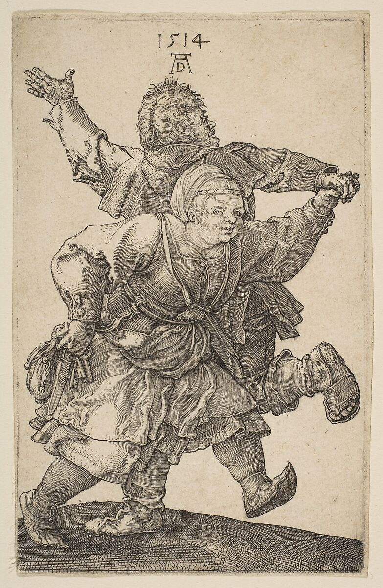
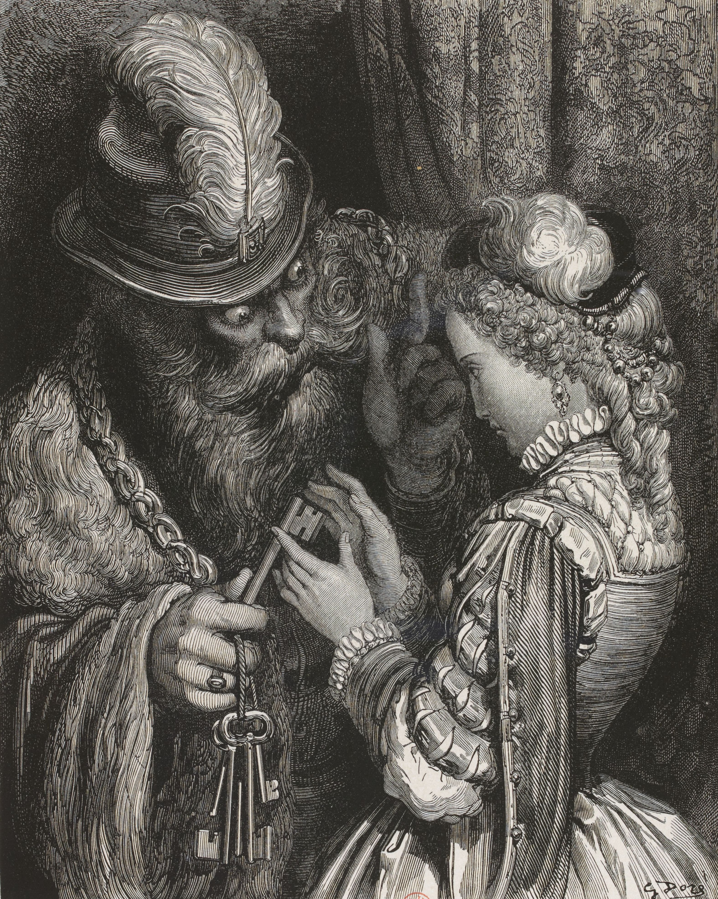
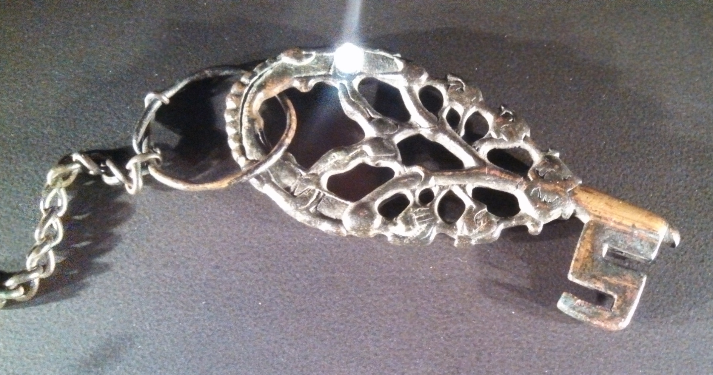
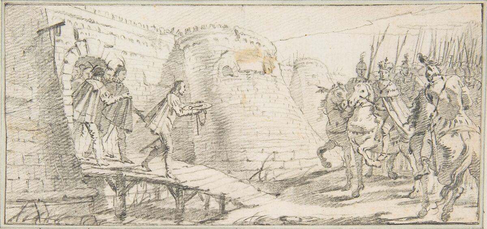

WITH THE WEIGHT OF YOUR KEYS THE MAP HAS CHANGED

INTRODUCTION
House keys: they may be light or heavy, and you may carry them with little to no meaning. Personally, I consider them unstable objects in my life, accumulating them by the dozen. The longer I stay in one place, the less happiness I feel. Perhaps it's a feeling or a sheer inability to appreciate any sort of routine. Often, the walls of a daily routine start to feel confining to me, and I feel the need to move again – places, houses, people.... With each move, of course, a different key enters my life.
Since my teenage years, I've had a recurring dream that still visits me from time to time. In the dream, I find myself in front of my middle school, waiting for a bus that never comes. Consequently, in my dream, I have to walk home. The more I walk, the less certain I am about where to go or where I am going. The various places I've called home blend together, and the paths leading there become indistinguishable. Gradually, I lose track of which home is mine. In that dream, the only hint that I have somewhere to go is a key wrapped on a thread around my neck. Trapped in a loop of attempting to walk to 15 different homes, I lose hope, never finding my way.
For a few weeks now, I've been asked, "But are you really writing about keys?" I never formulated a true response. I didn’t really have one. Because in my mind, the direction I was going in made sense. But it was so hard to formulate the path that I was taking, to put into words and to explain.
My tutor talked to me about kids and their keys around their neck, latchkey kids.
I had never put a specific name on it. If you remove the heavily negative connotation around it, I was part of them. I think in French culture, it’s quite common, young ones given keys to wear or to keep. Taught how to get to school from home and home from school. It's only when we moved back to Paris (but by then I was just a teen with a key) that I really looked at what they had put in my hand. I remember being disappointed that it was a more modern-looking key.
There were three doors to open, one with a code, one with a push, and one with this disappointingly banal-looking key. But what made it a bit interesting in my mind was that even though I deemed it ugly, it held a certain value.
It meant, first of all, that all these years, I had somewhere to go, a path I had to learn. Trust, I had earned from a very young age to be able to carry something that opened to my family's possessions, to our vulnerable little world.
All these keys around us, yet they belong to someone, and they open a whole other world that I didn’t have access to.
Our possessions, our dirty dishes, our painful family dinners, all hidden away thanks to one little metal object.
Nowadays, my key is my own, one that opens to clothes on the floor and a wig on the wall. Whereas when my key was just a duplicate of the one my parents had it would have opened to a well-made bed and hidden-away cigarettes.
Both were precious, they just did not have the same tonality or weight in my hands.
It is and isn’t about keys,
It’s about what they can mean.
To me or to someone else
But it is at least a little bit about them.
But as we are progressing, it is said that soon we will not ever use physical keys, instead we will implant chips in our hands, use facial or vocal recognition1. And with that the act of opening doors will never be or mean the same thing.
are we never really satisfied of what we have?
and in the hunt
is it just the hunt?
the cycle
of it all
but before they go
let me
talk about my keys.
🗝Chapter 1 - Keys made me into an upside-down Pendulum
In The Philosophy of Instability,
Ilya Prigogine explains the dynamics of a stable pendulum. When it's steady, its future motions can be anticipated. But once agitated or inverted, its movements enter a state of chaos. The system becomes unpredictable because it's highly sensitive to how its moved. 1
Ilya Prigogine, The Philosophy of Instability 1989Unsure if the pendulum will swing left or right.
I think many who've crossed borders or changed homes frequently, may be able to relate to this.
A stable life, where things follow routine and outcomes are expected, you become in certain ways, similar to a pendulum, doing what its predicted to do.
But when you change locations, multiple times, I believe it can mess with certain parts of your life, introducing a kind of chaos or small disruption. Like the inverted pendulum, your movement becomes uncertain.
New places, people, and routines add that unpredictable rhythm, echoing the disorder in certain physical systems.
This back-and-forth might influence how someone views change, maybe even creating a desire for it. It's like a dance between stability and unpredictability, akin to the pendulum swaying between order and chaos.
Is it a search for more? Is it a search for home? Locking the door and never opening it again, constantly opening new ones.
New key, new lock, new door, new space, new location, new life?
When does it stop?
When will you be satisfied?
Why can’t this be enough for now?
Maybe once you were dislodged too many times, turned upside down you can never be stable, not knowing what that looks like or feels like anymore?
Maybe for some stability becomes found by disrupting it.
Trying to find this interplay 🗝
of settling in one place and moving around becomes a chase, a craving for the next best thing, something to disorder, to stop the boredom that can be induced from staying in a place for too long.
She grew to the itch of a new uniform
you could hear her whisper
keys take me home
stop
the map from changing so much
take me to the place
where eggshells are extinct
in-between two dented metal objects
she forgot them one day
had to sit on the stairs
wished she could climb the walls
now every day is the same
her coat clanks at each step
tired from the weight
she tries to find her way
the map has changed
she wants to go home
detained by her memories
hard to distinct clearly, they have become hard to trust
she is searching for the pavement
the one with the cobblestones
every day looks the same
if only someone could tell her
which one is it
at night she dreams of the sound
the one the key makes when it unlocks the door
her coat clanks
in front of her is her destination for the night
not the final one
it's as if she knows which key is needed
to open the door that is in front of her
this time
its arched and bigger than her hand
its lighter than it looks
the object in her hand
enters the lock
turn it twice
shoulder pushes the door
in she goes
more doors more stairs
but she knows
which one is which
this door unlocks the woman with the eyepatch
but if she goes upstairs
she will be back
back to that place
she would rather stay with the eye patch
than go back
no choice
she goes up
same manoeuvre
same mechanism
her hands remember
what it's like
to open it
this one is empty
just a bed in her room
no sheets
outside they are nowhere to be heard
she tries to not think about the monster
under the bed
blue back he whispers
blue back
come and free me
she was his skeleton key
reduced to her essential parts
he kept her close
picking locks and fights
stripped her from anything else
that she could have been
to him she was just another
skeleton key2
A skeleton key is a master key with filed down teeth, designed to open various locks. The term comes from the simplified design, how it is reduced to its core, keeping only what is necessary for its function.Chapter 2 - Bearer of the keys turned into a skeleton key
I have read that in Viking times (793-1066 CE) a married woman would wear her house keys on chains attached on the outside of her dress to prove her status and make it visible to a public3
. 🗝 https://www.historicallocks.com/en/site/h/articles/viking-era-keys/the-womans-symbol-of-power/
Gotlandic female grave goods from Abb. 40 (Thunmark-Nylén, 1995).”
Let’s assume for a moment that this might have happened. After all, it isn’t too far from reality when it comes to the condition of women and the objectification, they have gone through for centuries now. As well as in the later centuries such as the 15th it was quite common for women to carry their various keys around a belt4
. https://www.metmuseum.org/art/collection/search/468744It is also depicted in many different etches, over the centuries.

Albrecht Dürer,Peasant Couple Dancing,1514,engraving, 11.8 × 7.5 cm
I believe it must of have happened at least once, a woman carrying keys on the outside of her dress not just for practical reasons but like a ring, like a proof that she has earned the right to respect, that she owns a house, that she is owned.
Using her key as a symbol of autonomy and authority within the domestic sphere. What comes to mind, is a certain reflection on the women’s mobility and independence being restricted, bound by this domestic sphere, a meaning that the keys hold, hanging on her dress, clanking away at each step she took outside.
Keys control access, determining who is allowed entry to certain spaces and who is not.
Possessions, that is what a key opens to after all.
And all this makes me think of the act of giving keys to woman like a surface action telling them they are safe.
Access, possession
Inside and outside
If you wear them on the outside of your dress isn’t that not just about access to an inside anymore?
All of this, what I’m trying to say to pin, and point might be easier if I use the blue beard story as an example. A tale that has many different interpretations, the most famous one being by Charles Perrault in Histoires ou contes du temps passé , it tells the story of Bluebeard, a wealthy man who no one wants to marry because of his eccentric personality and appearance, it doesn’t help that all six of his previous wives have disappeared. One girl accepts his wedding proposal, making her his seventh wife. He one day leaves on a trip and entrusts her with all the keys to his castle that she now shares with him. To this set of keys is included the one to a secret chamber which he forbids her of accessing, if she does, he will kill her.

Gustave Doré, Barbe Bleue, 1862, engraving, 33 × 27 cm, BnF, Paris.
But give someone a key, forbid them to go into a room and leave them for a few days, temptation wins. In she goes, horrified at the view of what she has unlocked, the 6 bloody bodies of the missing wives lay in front of her, the key drops into the blood.This bloodied key, will be the tell-tale for blue beard to know that his wife has been inside the forbidden room. He tries to kill her, but she is saved by her brothers.
In Women who run with the wolves , Clarrisa Pinkola Estés goes over myths and tales such as blue beard, where she elaborates on this key, saying that once the wife has decided to use it to open the door, she unlocks consciousness, to see things as they are instead of being the designated devoted wife.
Tales of women being locked away, don’t derail so far from the reality of today, not just physically but also mentally bound to this domestic world that has been constructed over the centuries by expectations of what is to be a woman, a wife a mother. Hand them keys, it isn’t just to lock and unlock, it is telling them silently what is expected of them, bearer of the keys, blindly trust the men of the house, hold it all together. You turn them into a skeleton key, stripping them of their desires, shaping and filing them down turning them into tools to access what you need.

Viking decorative key on Display at the Royal British Columbia Museum
And when it's time to leave
the key
under the doormat
she doesn't hesitate
no use looking back now, she will do that
in those specific days
when the doors don’t feel enough
outside
her memories
don't matter
except the one that knows which way it is
as she slowly gets out of that street
the map changes
lost again, her keys start to feel heavy
even if
over the days it has gotten lighter
keys under the doormat all over the city
only a few are left
but is there a missing key
one she is deprived of
one that opens what she is looking for
off she goes
a dot on the map
like many others looking for something
swallowing
tap dancing
we wait
what for?
she wants to know
which one
opens
whatever door
she needs
she walks
what for?
for the key to clank against her coat
but today she walks
until it is night
until it is right
until
her key clanks
she stops
the building standing in front of her
innocent things
she has been here before
looking through the windows
feeling so small
occupying their thoughts
the green carpet against her feet
the big door to the hall is open
it never smelt good
she doesn’t mind
grew up to the smell of
frozen peas for dinner
takes the stairs
last floor
she already feels small
unlike
how good it is
to unlock this one
red door, metal dented looking object inserted into the lock
automated mechanic systems
she is part of it
coat on the green carpet
someone was here
peas in the fridge
when was the last time
she wasn't dictated by her keys
at least she has something that is hers
that opens
what it opened today
is a place she never thought she would sleep in again
a place only her nostalgia could access
sleepovers and dubbed movies
the bath is still warm
goes in the water
under the water
under the sheets
she counts the ambulances
CHAPTER 3 Within its metal frame I surrender.
The association between keys and power has always existed. Keys control access, determining who is allowed entry to certain spaces and who is not. This authority can be seen in the case of master keys , as they possess the ability to unlock multiple doors within a designed system. The owner of a master key holds a level of control that goes beyond an individual space, granting them access to many possibilities inaccessible to others.
The master key system is primarily used in institutions such as hotels, office buildings, or apartment complexes. With a turn of the key, a push on the door by a custodian, they gain entry to offices and storage rooms but also to restricted areas that are off-limits to the non-master keyers ,giving to the custodian the power to navigate the entire building with ease, in order to fulfill their duties. As well as the responsibility of exercising their authority fairly to maintain the integrity of the spaces they must oversee.
If in the wrong hands master keys granting entry to all spaces 🗝within said building could possibly compromise the safety of occupants
Keys also embody the notion of freedom and captivity, capable of releasing or constraining. In many situations, if you possess keys, you have control over who can enter these spaces; you hold the power to grant or deny entry. If you are the sole owner of these keys, in certain ways (depending on one's situation), you have access to a certain freedom; you don't rely on others. You are the one to turn the key in the lock, locking yourself in and out as you please, not being bound by another influence of power.
The surrender of keys during war historically symbolized letting go of control or authority over a city. This act of surrender often occurred when the defending force realized that further resistance was pointless, and that they did not stand a chance compared to the attacking force. Surrendering keys took various forms, such as physically handing over the keys to the gates of the city, or it was a symbolic gesture where the keys were presented to the victorious commander.
Giving up control to the bigger force, unsure if you can trust the safety of what you have kept, onto the hands of someone else.

Giovanni Battista Tiepolo, Illustration for a Book: Surrender of the Keys of a City to an Emperor, 1696–1770
Down to the very last one
her steps are finally silent now
still no sign
of the map
one that leads her
to the final door
all she knows is how to close them
leave the key under the doormat
all this search
for the good door
if she found it
would she even know how to stay
how to be in one place
would the map stop changing
did it become a habit of collecting
like old men and their stamp collections
sick of the object
the one that makes her chase
when did it start
in her first house there was a cross
she prayed every night so that the lord protected
in that house there were many paintings
in the night she could hear them speak
they would tell her how they were the spectators
her family were the performers
she grew
they collected dust
they told her change was constant
that they were the only stable thing about time
no matter where her family went
they followed
now there is no longer a cross
the paintings stayed
new ones joined them
Conclusion
From the clank of a latchkey kids' pendant to the weight of responsibility carried by a Viking woman’s house key, keys are wrapped around with themes of stability and instability, autonomy and authority, freedom and captivity. 🗝
Through somewhat personal reflections, tales and historical situations, we have walked through a part of the vast landscape of human experience within the metal dented objects we carry every day.
As we stand at the edge of an era where physical keys may soon be entirely replaced by digital codes and biometric scans, the essence of keys still lies. They represent power, identity and transition. Whether they hang from a belt in medieval times or are clutched in the palm of our hands, they symbolise our desire for access, control and meaning in an ever-changing world.
In the end, maybe the true significance of our keys isn't in the metal or plastic from which they are crafted, but in the stories, they are a part of, the memories they hold and the doors they open, both literal and metaphorical. As we navigate the map i hope we cherish the keys we carry, for they are not just tools of entry, but they are keepers of what we knew, what we know, and what is to come.